Code
# Import data
library(giscoR)
# Manupulating geographical objects
library(terra)
library(sf)
library(potential)
# Mapping
library(mapsf)
library(maptiles)The ENACT-POP R2020A dataset is a spatial raster dataset provided by JRC (Schiavina et al. (2020)). It depicts the seasonal nightime and daytime population in a 1km grid resolution for 2011. It covers EU28.
These 24 datasets (one for each month, and one for daytime and nightime) are bassed on a multi-layered dasymetric approach tjat models the spatial distribution of different population groups sepatately and according to a selection of covariates derived from novel geospatial data sources (Batista e Silva et al. (2020))
It follows four interlinked phases Batista e Silva et al. (2020) :
The GHSL - Global Human Settlement Layer proposes a data viewer to interactively explore the results, here. However, the tool is not especially suitable to :
We propose consequently in this notebook a methodological framework for analysing the seasonal and daytime changes based on spatial interpolation method (Stewart (1942)), allowing to observe the phenomenon on a continuous surface from a set of discrete points.
NUTS units are imported with the giscoR package
For spatial data handling, terra is used for manipulating raster tiles, sf for manipulating vector geometries, potential for implementing the Potential model as definded by Stewart (1942).
mapsf is used for thematic mapping and maptiles for displaying some useful labels on maps.
# Import data
library(giscoR)
# Manupulating geographical objects
library(terra)
library(sf)
library(potential)
# Mapping
library(mapsf)
library(maptiles)Import and view raw data. It corresponds to rasters covering all Europe. Three layers are imported :
Here is a map of the raw data.
# Import data
JAN_D <- rast("data-raw/ENACT_POP_D012011_EU28_R2020A_3035_1K_V1_0.tif")
JAN_N <- rast("data-raw/ENACT_POP_N012011_EU28_R2020A_3035_1K_V1_0.tif")
AOU_D <- rast("data-raw/ENACT_POP_D082011_EU28_R2020A_3035_1K_V1_0.tif")
# View
plot(JAN_D)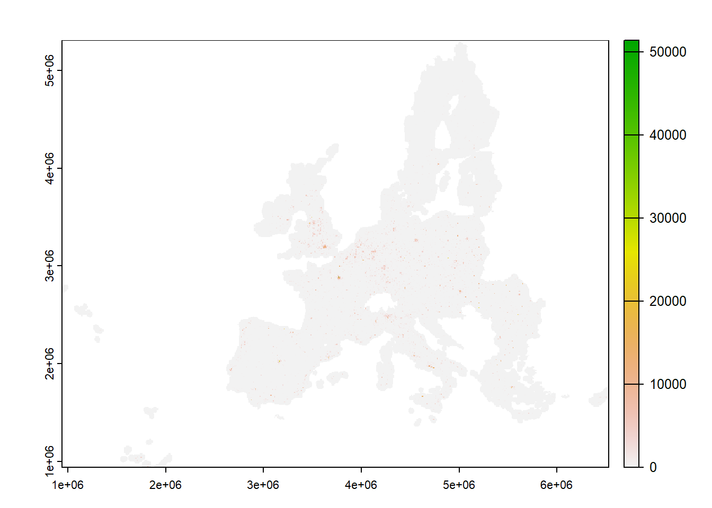
The raster is reprojected in the European reference projection.
JAN_D <- project(x= JAN_D, y = "EPSG:3035", method = "bilinear")
|---------|---------|---------|---------|
=========================================
Import European regions with giscoR R package, that will be used for selecting regions of interest.
nuts1 <- gisco_get_nuts(year = "2021", epsg = "3035", resolution = "03",
nuts_level = "1")
nuts2 <- gisco_get_nuts(year = "2021", epsg = "3035", resolution = "03",
nuts_level = "2")
nuts3 <- gisco_get_nuts(year = "2021", epsg = "3035", resolution = "03",
nuts_level = "3")We then choose the Ile-de-France region (FR10). Territorial unit is extracted from the original NUTS layer, rasterized and croped to the original layer.
# Select region
nuts_code <- "FR10"
nuts2_sel <- nuts2[nuts2$NUTS_ID == nuts_code,]
nuts3_sel <- nuts3[substr(nuts3$NUTS_ID, 1, 4) == nuts_code,]
# Transform to raster
sel <- vect(nuts2_sel)
# Crop and mask the original layer to the region of interest
crop_JAN_D <- crop(JAN_D, sel)
mask_JAN_D <- mask(crop_JAN_D, sel)
# See result
plot(mask_JAN_D)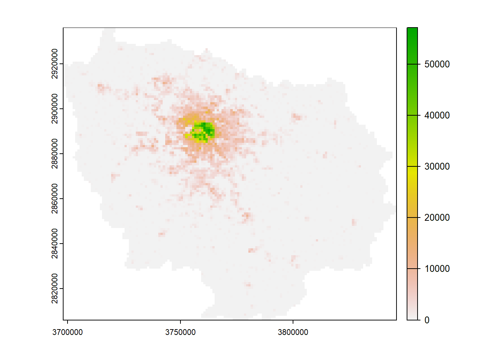
This raster is afterwards vectorized. We give an unique ID and a given column name for simplifying furtuer operation and merges. The map below shows the resulting output vectorized layer.
# Vectorize result
JAN_D_sel <- as.points(mask_JAN_D)
JAN_D_sel <- st_as_sf(JAN_D_sel)
# Harmonize column names
JAN_D_sel$ID <- row.names(JAN_D_sel)
colnames(JAN_D_sel)[1] <- "POP_JANV_D_2011"
# Map of values above 1
tmp <- JAN_D_sel[JAN_D_sel$POP_JANV_D_2011 > 1,]
tmp2 <- JAN_D_sel[JAN_D_sel$POP_JANV_D_2011 < 1,]
mf_map(tmp2, pch = 21, col = "lightgrey", cex = .6, border = NA)
mf_map(tmp, pch = 21, var = "POP_JANV_D_2011", type = "choro", nbreaks = 8,
border = NA, cex = .6, add = TRUE) 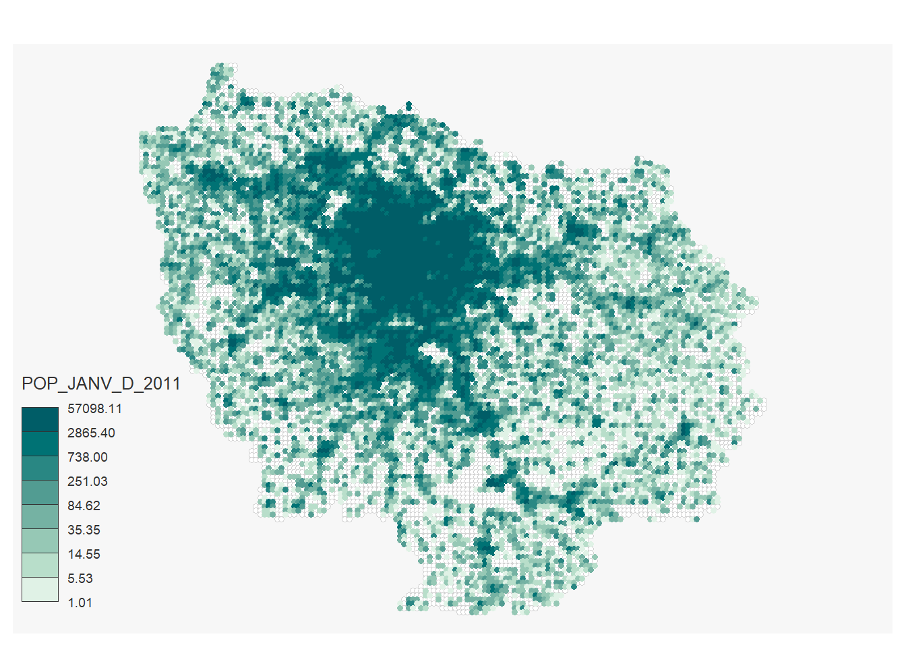
We implement a function to do all this stuff in a synthetic way. It allows to build vector layer for a reference input layer (the raw files) according to a region of interest. This is done for the layer with population in nightime in January (JAN_N) and daytime in August (AOU_D).
enact_extract <- function(x, var_name, sel){
# Reproject data
x <- project(x= x, y = "EPSG:3035", method = "bilinear")
# Filter for a given region
sel <- vect(sel)
x <- crop(x, sel)
x <- mask(x, sel)
# Vectorize output
x <- as.points(x)
x <- st_as_sf(x)
# Identifiers and colnames
x$ID <- row.names(x)
colnames(x)[1] <- var_name
return(x)
}
JAN_N_sel <- enact_extract(x = JAN_N, sel = nuts2_sel, var_name = "POP_JANV_N_2011")
|---------|---------|---------|---------|
=========================================
AOU_D_sel <- enact_extract(x = AOU_D, sel = nuts2_sel, var_name = "POP_AOU_D_2011")
|---------|---------|---------|---------|
=========================================
These layers are merged to the first one. Data is prepared !
JAN_N_sel <-st_set_geometry(JAN_N_sel, NULL)
AOU_D_sel <-st_set_geometry(AOU_D_sel, NULL)
pt <- merge(JAN_D_sel, JAN_N_sel[,,drop = TRUE], by = "ID")
pt <- merge(pt, AOU_D_sel, by = "ID")# Keep only points covering the study area
pt_n3 <- st_intersection(pt, nuts3_sel)
pt_n3 <- st_set_geometry(pt_n3, NULL)
# Aggregate results by NUTS3
n3 <- aggregate(pt_n3[,c("POP_JANV_D_2011",
"POP_JANV_N_2011",
"POP_AOU_D_2011")],
by = list(NAME_LATN = pt_n3$NAME_LATN),
FUN = sum)
# Population in thousands
n3[,c(2:4)] <- n3[,c(2:4)] / 1000
# Barplot
par(mar=c(6,4,4,4), cex.main = 0.9, cex.lab = 0.8, cex.axis = 0.7)
barplot(cbind(POP_JANV_D_2011,POP_JANV_N_2011) ~ NAME_LATN, data = n3, beside = TRUE,
border = FALSE, las = 2 , col = c("#f7b26d", "#6d86f7"), xlab ="", axes = TRUE,
ylab = "Population (Thousands)")
legend ("topleft", legend = c("Day","Night"),
fill = c("#f7b26d", "#6d86f7"), cex = 0.6, border = NA, bg = NA, bty = "n")
title("Resident population, depending on the period of the day")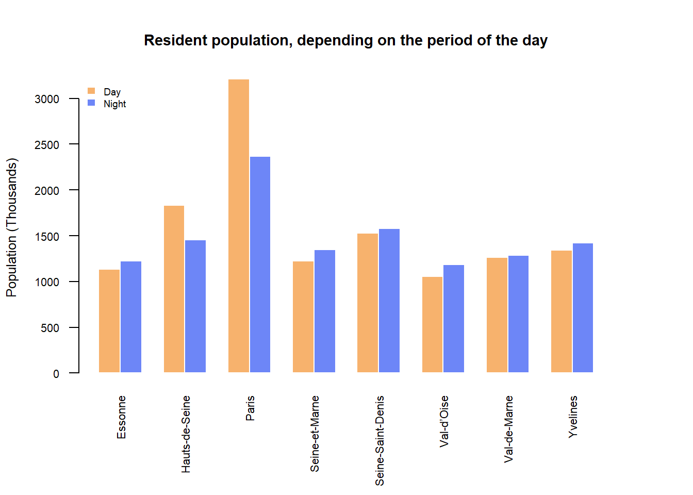
Population potentials for daytime and nightime are computed in a neighbourhood of 2000 meters.
It requires first to create a regular grid with the extent of Ile-de-France. Then the mcpotential function computes potentials on the basis of a distance matrix between the created grid (y) and the observed population (pt) in nightime and daytime. To understand more in detail the methodology behind and the core arguments (span, limit, beta), have a look to Giraud (2022).
Then, the 2 potential are divided and normalized in index 100. 100 corresponding to the population in nightime. Deciles of the resulting indicator are extracted to build polygons of equipotential from the regular grid of potential points.
# Create 1km reggular grid
y <- create_grid(x = pt, res = 1000)
# Potential in a neighbourhood of 5000m
y$POT_JAN_D <- mcpotential(x = pt, y = y, var = "POP_JANV_D_2011", fun = "e",
span = 2000, limit = 10000, beta = 2)
y$POT_JAN_N <- mcpotential(x = pt, y = y, var = "POP_JANV_N_2011", fun = "e",
span = 2000, limit = 10000, beta = 2)
# Resident population day / night
y$DIFF_D <- y$POT_JAN_D / y$POT_JAN_N * 100
# Quantiles 10, classes, covering the study area
discr <- st_intersection(y, nuts2_sel)
discr <- discr[,"DIFF_D", drop = TRUE]
discr <- quantile(discr, probs = seq(0,1,0.1), na.rm = TRUE)
# Equipotential
iso <- equipotential(x = y, var = "DIFF_D", breaks = discr, mask = nuts2_sel)It allows to build a map. Separation between warm and cold colours corresponds to the class threshold the most closed to 100. 100 meaning equal population in nightime and daytime.
# Diverging palette around 100
div <- which(abs(discr-100) == min(abs(discr-100)))
pal <- cols <- mf_get_pal(n = c(div-1, 11-div), pal = c("Purp", "YlOrRd"))
# Map
par(mar=c(4,4,4,4))
mf_map(x = iso, var = "min", type = "choro",
breaks = discr, pal = pal, lwd = .2, border = NA, leg_val_rnd = 1,
leg_pos = "topleft",
leg_title = paste0("Difference in resident_population\n",
"Between the day and the night\n",
"in 2011 (100 = resident population at night)"))
mf_map(x = nuts3_sel, col = NA, add = TRUE)
tiles_front <- get_tiles(nuts2_sel, crop = TRUE, provider = "CartoDB.PositronOnlyLabels", zoom = 9)
plot_tiles(tiles_front, add = TRUE)
mf_layout(title = "Resident population - daytime difference",
credits = paste0("Realisation : Ronan Ysebaert, 2023",
"Data source : ENACT-POP (Global Human Settlement Layer, JRC, European Commission, 2023"),
arrow = FALSE)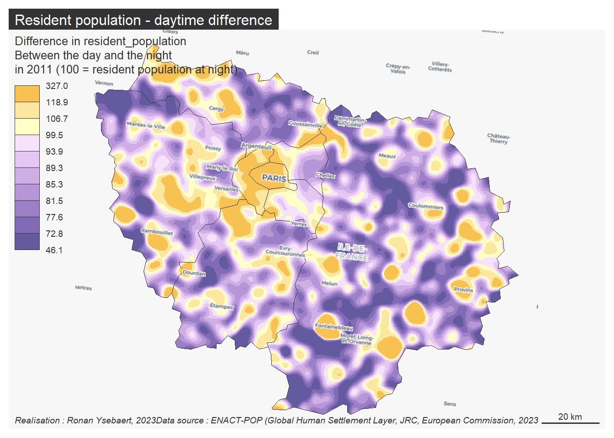
par(mar=c(6,4,4,4), cex.main = 0.9, cex.lab = 0.8, cex.axis = 0.7)
barplot(cbind(POP_JANV_D_2011,POP_AOU_D_2011) ~ NAME_LATN, data = n3, beside = TRUE,
border = FALSE, las = 2 , col = c("#6bc982", "#ff697a"), xlab ="", axes = TRUE,
ylab = "Population (Thousands)")
legend ("topleft", legend = c("January","August"),
fill = c("#6bc982", "#ff697a"), cex = 0.6, border = NA, bg = NA, bty = "n")
title("Resident population, depending on the season")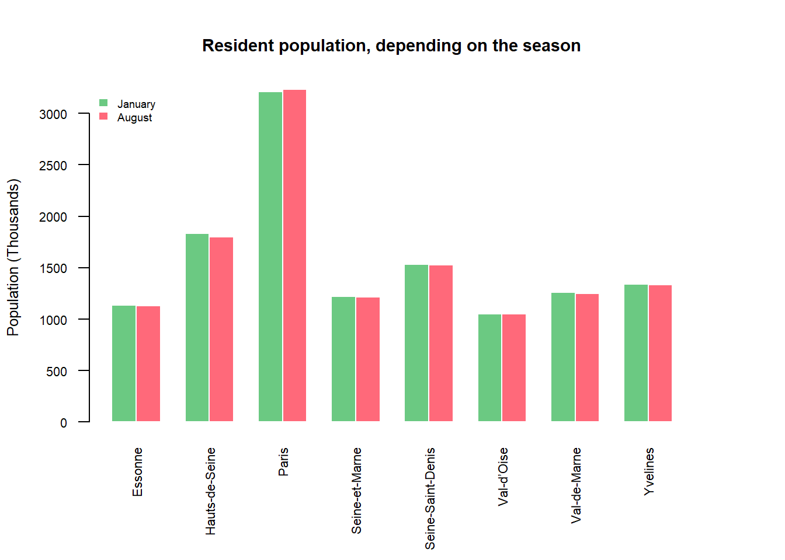
For the seasonal trend we look into the absolute difference between population in January and August. The resulting picture is not exactly the same than the previous map as it highlights the population gain / loss over the seasons.
# Compute potential
y$POT_AOU_D <- mcpotential(x = pt, y = y, var = "POP_AOU_D_2011", fun = "e",
span = 2000, limit = 10000, beta = 2)
# Resident population day / night
y$DIFF_D <- y$POT_AOU_D - y$POT_JAN_D
# Quantiles 10, classes, covering the study area
discr <- st_intersection(y, nuts2_sel)
discr <- discr[,"DIFF_D", drop = TRUE]
discr <- quantile(discr, probs = seq(0,1,0.1), na.rm = TRUE)
# Diverging palette around 100
div <- which(abs(discr-100) == min(abs(discr-100)))
pal <- cols <- mf_get_pal(n = c(div-1, 11-div), pal = c("Reds 3", "Greens 3"))
# Equipotential
iso <- equipotential(x = y, var = "DIFF_D", breaks = discr, mask = nuts2_sel)
# Map
par(mar=c(4,4,4,4))
mf_map(x = iso, var = "min", type = "choro",
breaks = discr, pal = pal, lwd = .2, border = NA, leg_val_rnd = 1,
leg_pos = "topleft",
leg_title = paste0("Difference in resident_population\n",
"Between August and January"))
mf_map(x = nuts3_sel, col = NA, add = TRUE)
tiles_front <- get_tiles(nuts2_sel, crop = TRUE, provider = "CartoDB.PositronOnlyLabels", zoom = 9)
plot_tiles(tiles_front, add = TRUE)
mf_layout(title = "Resident population - seasonal difference",
credits = paste0("Realisation : Ronan Ysebaert, 2023\n",
"Data source : ENACT-POP (Global Human Settlement Layer, JRC, European Commission, 2023"),
arrow = FALSE)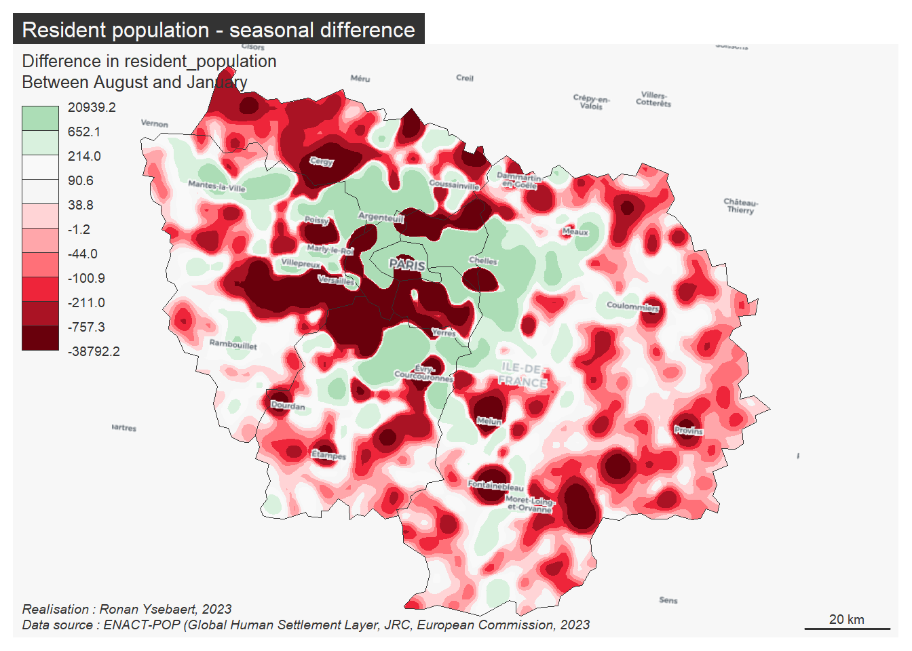
Adapting this methodological framework to other regions is afterwards quite easy. Let’s analyse the situation in London between daytime and nightime in January…
|---------|---------|---------|---------|
=========================================
|---------|---------|---------|---------|
=========================================
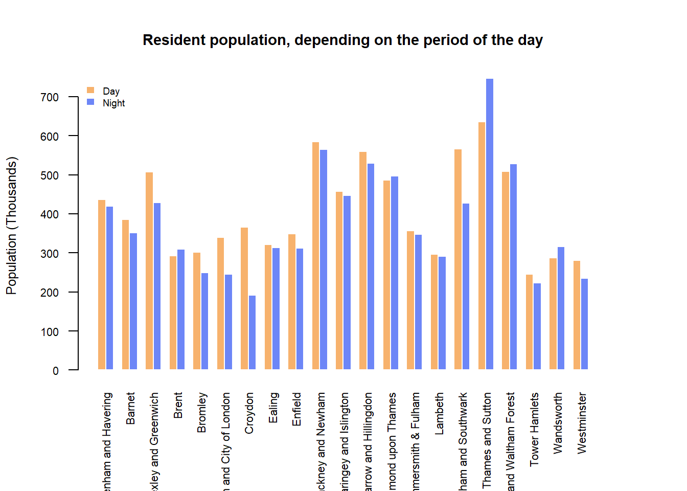
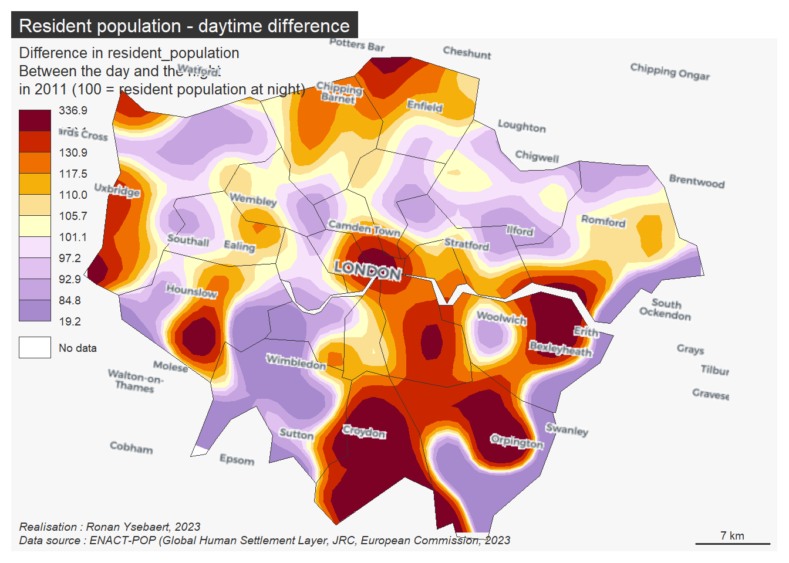
… Or in Auvergne-Rhônes-Alpes region in France between January and August. The span of the Stewart’s potential has been enlarged to 5000 meters instead of 2000 meters to observe more general trends.
|---------|---------|---------|---------|
=========================================
|---------|---------|---------|---------|
=========================================
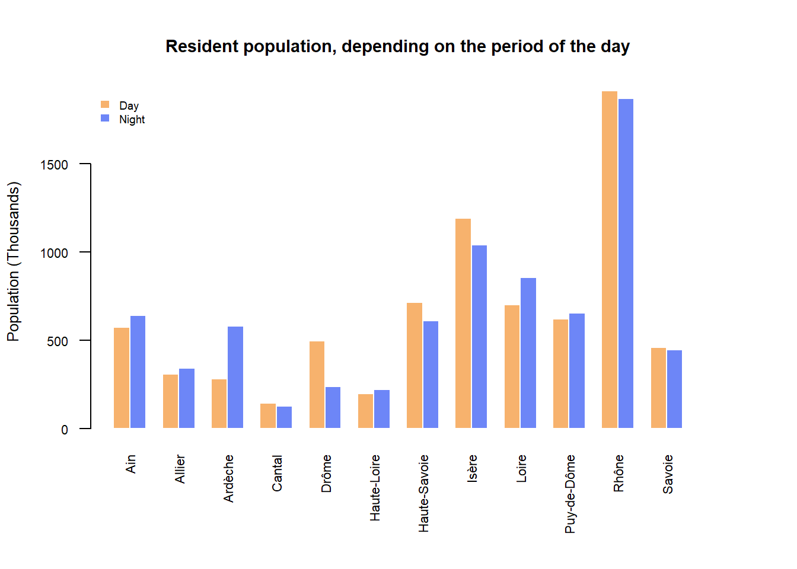
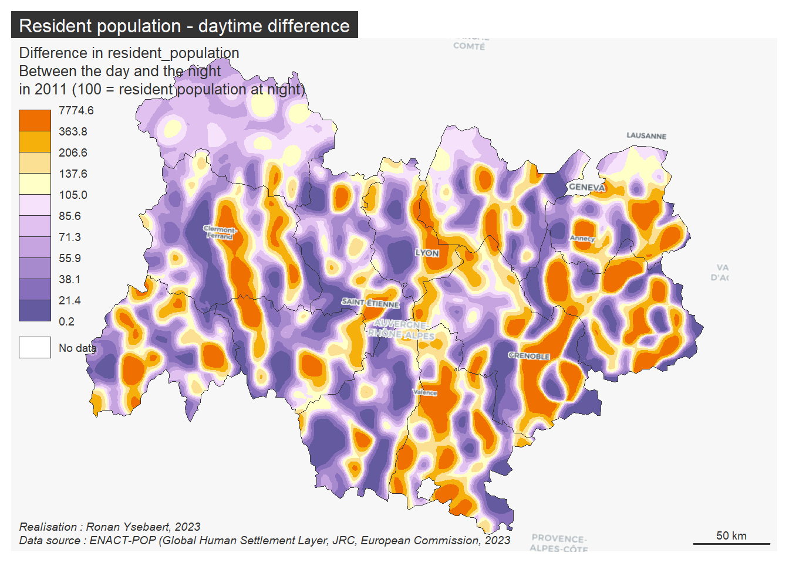
And in Bretagne region in France between January and August.
|---------|---------|---------|---------|
=========================================
|---------|---------|---------|---------|
=========================================
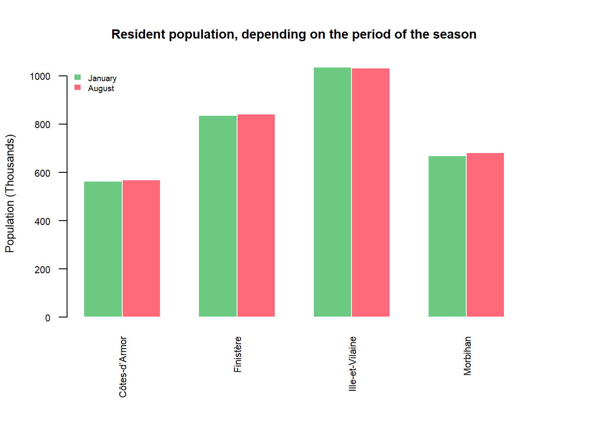
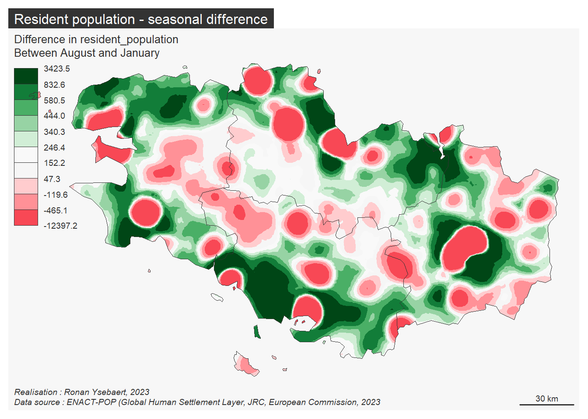
sessionInfo()R version 4.2.2 (2022-10-31 ucrt)
Platform: x86_64-w64-mingw32/x64 (64-bit)
Running under: Windows 10 x64 (build 19045)
Matrix products: default
locale:
[1] LC_COLLATE=French_France.utf8 LC_CTYPE=French_France.utf8
[3] LC_MONETARY=French_France.utf8 LC_NUMERIC=C
[5] LC_TIME=French_France.utf8
attached base packages:
[1] stats graphics grDevices utils datasets methods base
other attached packages:
[1] maptiles_0.4.0 mapsf_0.6.1 potential_0.2.0 sf_1.0-10
[5] terra_1.7-18 giscoR_0.3.3
loaded via a namespace (and not attached):
[1] Rcpp_1.0.10 compiler_4.2.2 pillar_1.8.1 iterators_1.0.14
[5] class_7.3-20 tools_4.2.2 digest_0.6.31 jsonlite_1.8.4
[9] evaluate_0.20 lifecycle_1.0.3 tibble_3.2.0 png_0.1-8
[13] pkgconfig_2.0.3 rlang_1.1.0 foreach_1.5.2 DBI_1.1.3
[17] cli_3.6.0 rstudioapi_0.14 curl_5.0.0 parallel_4.2.2
[21] yaml_2.3.7 xfun_0.37 fastmap_1.1.1 e1071_1.7-13
[25] dplyr_1.1.0 knitr_1.42 generics_0.1.3 htmlwidgets_1.6.1
[29] vctrs_0.5.2 isoband_0.2.7 tidyselect_1.2.0 classInt_0.4-9
[33] grid_4.2.2 glue_1.6.2 geojsonsf_2.0.3 R6_2.5.1
[37] fansi_1.0.4 rmarkdown_2.20 purrr_1.0.1 magrittr_2.0.3
[41] codetools_0.2-18 htmltools_0.5.4 units_0.8-1 slippymath_0.3.1
[45] KernSmooth_2.23-20 utf8_1.2.3 proxy_0.4-27 doParallel_1.0.17 @online{ysebaert,
author = {Ronan Ysebaert},
editor = {},
title = {Population over the Day, the Night, the Seasons},
date = {},
langid = {en}
}